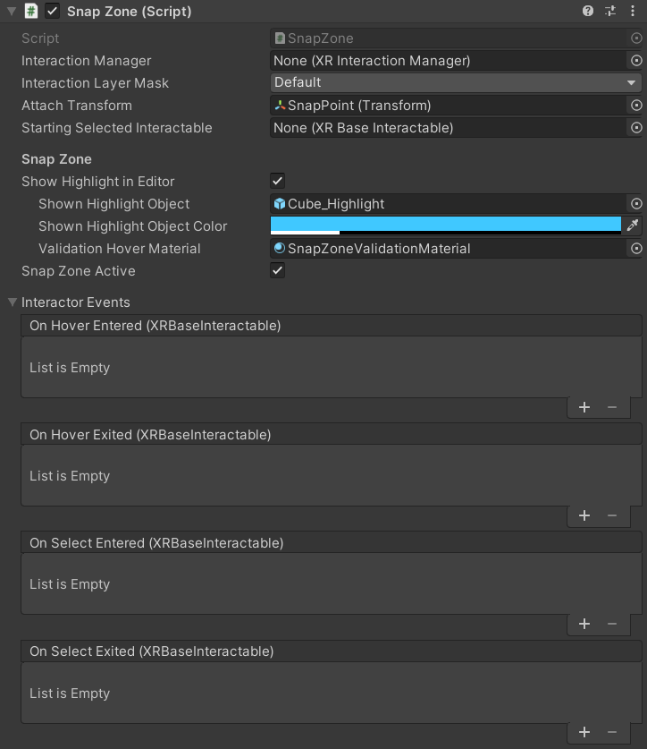
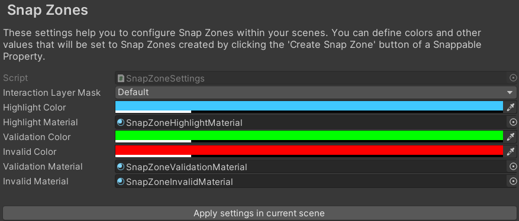

Snap Object
Description
The Snap Object condition is fulfilled when any of the Objects is released into the Zone to snap into, which means the collider of any of the Objects and collider of the Zone overlap. Adapt the collider size of the snap zone to increase or decrease the area where the user can release an Object. Increasing the collider size of the snap zone decreases the required snap precision and simplifies the user's interaction in VR.
After the user releases an Object, this is moved to the snap zone's SnapPoint. To adjust this position, change the position of the SnapPoint child object of the Zone to snap into object.
Snap Zone Generator
For any snappable object you can generate a snap zone that can snap this object and can be used as a
Zone to snap into. To do so, navigate to theSnappable Propertyin Unity's Inspector. You will see two buttons. Clicking on the buttonCreate Snap Zone for this object, you will create a snap zone that only accepts this exact object. Clicking onCreate Snap Zone for objects in the same groupswill instead create a snap zone that accepts every object that shares at least a group with the current object. Note that the current object will still determine the shape of the snap zone's ghost object.
If you want a specific snap zone behavior, like for example accepting only one group of the source object instead of all of them, you'll have to manually change that. Select the snap zone and find the
Has Guid Validationcomponent. If you manually created your snap zone, you might have to add this component manually as well. Add to the list the objects you want to be valid for this snap zone. You can reference single objects by object ID, or entire categories of objects via groups.
Manual Snap Zone Creation
Instead of the automatic generation as described above, you can do those steps also manually. Please refer to available documentation on the
XRSocketInteractorfrom Unity or related sources. You can also make changes to the automatically created snap zone to adapt it to your needs. Please note that these changes might impact the process logic.Feed Forward for Snap Zones
Snap zones are restricted to which objects can be snapped. This means every object can be valid (i.e. it can be snapped to this zone) or invalid (it can not be snapped to this zone) for a snap zone. This is achieved with validation components on the snap zone, for example the
Has Guid Validationcomponent. You can use this component to configure which specific objects or groups are accepted by the snap zone. In case you are moving a valid object into a zone, the snap zone color changes to ‘Validation Color’ (green), providing the user in VR with positive feedback. In case you are moving an invalid object into a zone, the snap zone color changes to ‘Invalid Color’ (red), giving the user the feedback that this is the wrong object for this zone. You can modify the colors and materials to be used in the Snap Zones parameters and settings.Snap Zone Parameters and Settings
To change the highlight color or validation hover material of a dedicated snap zone, navigate to the snap zone object in the Unity Inspector. You will find the Snap Zone Parameters and Settings in the script
Snap Zone.
To change the colors and materials of all snap zones in the scene, select them in the VR Builder snap zone settings and press 'Apply settings in current scene'.

The snap zone settings can be found in the project settings in tab
VR Builder > Settings > Snap Zones.
Configuration
Objects
The
Process Scene Objectsto place (snap). The objects needs to have theSnappable Propertyand a collider component configured.Zone to snap into
This field contains the
Process Scene Objectwhere any of theObjectsare required to be snapped. Make sure the object has a collider component with theIs Triggerproperty enabled.Lock settings
If the
Inherit Scene Object Lock Stateis checked on theSnappable Property, theProcess Scene Objectwill inherit the lock state of its parentProcess Scene Object.If the
Is Always Unlockedis checked on theSnappable Property, theProcess Scene Objectwill not be locked by the VR Builder process at runtime. It is still possible to lock theSnappable Propertymanually.